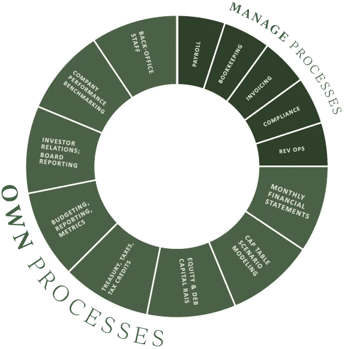
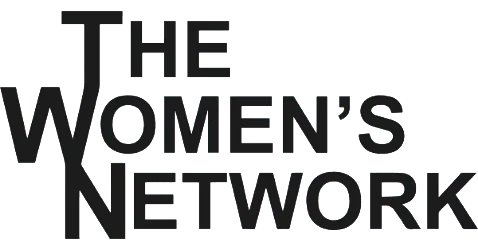
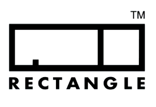

A raise is approaching.
Connect the capital plan to the model, supporting schedules, and diligence materials behind the story.
Fundraising readiness →Built for Enterprise SaaS
Free ConsultationWe combine financial market knowledge and operating experience to help SaaS founders build the business—and the finance function behind it.
From the next capital raise to the next board meeting, your financial co-pilot connects the plan, the numbers, and the decisions.



Charles Solomon founded Centripetal in 2018 around two realities: finance can absorb a founder’s attention, and building a company can be a lonely journey.
The firm brings financial leadership and a personal commitment to the people building the business. We embed with your team, learn the company, and stay close to the decisions that matter.
Charles Solomon
Founder / Managing Partner
Financial leadership becomes useful when the work changes. Start with the decision ahead of you.
Connect the capital plan to the model, supporting schedules, and diligence materials behind the story.
Fundraising readiness →See what hiring, collection timing, and operating assumptions mean for cash—and when a decision is needed.
Cash flow & runway planning →Bring reporting, operations, capital decisions, and financial strategy together with an embedded co-pilot.
Fractional CFO for SaaS →“We had never dealt with institutional investors before and Centripetal really helped us take a step up to next level…Series A institutionally backed company with a board.”
Megadata
“We raised a $3 million convertible note…Centripetal was certainly heavily involved…lobbying for the best deal.”
Adventr
“Centripetal invests in relationships. They go above and beyond. They care about clients and their client’s performance and success.”
The Women’s Network
“Knowing that you have someone who can build you that flexible model is critical to moving fast. Companies at our stage, moving fast is one of the only things that matters.”
Rectangle
Practical guides and a finance scorecard to help you find the gaps, frame the questions, and choose what to work on next.
Assess eight categories and use the gaps to focus the next conversation.
Use the SaaS Finance Scorecard →A working guide to the questions and supporting documents behind a Series A process.
Review Series A diligence →Review banking, access, approvals, and responsibility before informal processes become fragile.
Review treasury hygiene →Bring the financial question, operating challenge, or capital decision in front of you. We’ll start there.
Free Consultation